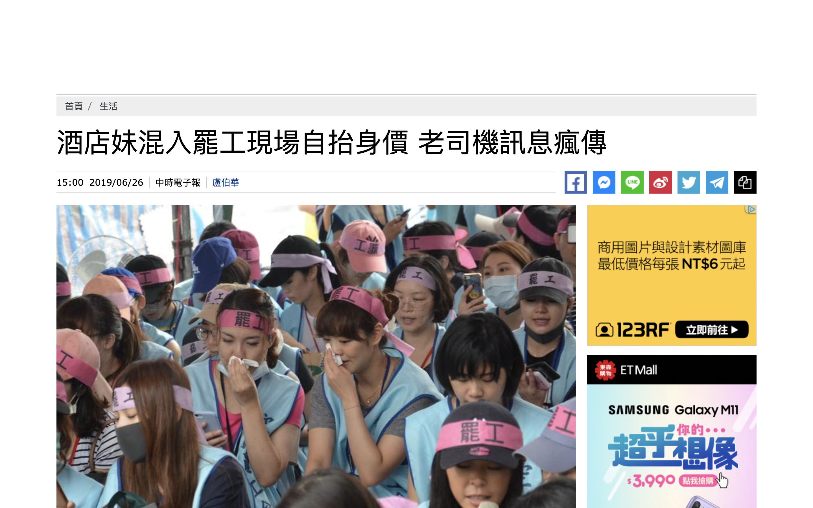

假新聞（Fake News）是隨著網路興起後，產生的新詞，用來指「捏造新聞」或「沒有事實根據的新聞」
假新聞的目的有很多，但多數是為了誤導大眾，以帶來政治、經濟、市場、或心理得到成就感和利益
通常假新聞有這些特徵
- 釣魚式標題
- 垃圾內容
- 宣傳某件事物
- 誤導性的標題
- 諷刺性內容
- 有偏見的新聞


1 / 3
媒體報導「烤肉式用刑 中國凌虐新疆人手法曝光」
2019年2月10日前後多家媒體引用網路影片據以報導，標題如「烤肉式用刑 中國凌虐新疆人手法曝光」等等，內容稱：「從新疆逃脫至土耳其的東突厥斯坦民眾，在臉書上PO出1段中國警方虐待新疆人士的影片，從中能見新疆人士穿著藍色囚衣被五花大綁在刑具上，由1名員警負責拷問，另有員警操控刑具對新疆民眾大喊『你違規啊，現在受罰啦，開動！』示意開始用刑。」
結果，一位民眾小金（化名）回應報導文章指出自己就是該影片中當事者，並說明影片內容為他本人正在進行角色扮演：「北七啊這是真的在玩BDSM的影片啦，烤肉架上的是林北啦！」台灣查核中心透過管道與小金取得聯絡，小金提出原始影片與現場拍攝之其他照片等證據供查核中心檢視，發現提供照片中之衣物顏色、款式及影片中之背景、物品、佈置等等全都與新聞中相同。
小金說明，此影片是自己上傳放在社交媒體上，並且說明身上穿的衣服雖然是真正中國監獄的監獄服，但是地點不是在監獄，而是佈置成監獄風格的私人場所，擔任警察角色的也不是真正的獄警。綜上所述，「中國當局使用『烤肉式行刑』凌虐新疆人」等報導是誤用民眾角色扮演影片的假新聞。
結果，一位民眾小金（化名）回應報導文章指出自己就是該影片中當事者，並說明影片內容為他本人正在進行角色扮演：「北七啊這是真的在玩BDSM的影片啦，烤肉架上的是林北啦！」台灣查核中心透過管道與小金取得聯絡，小金提出原始影片與現場拍攝之其他照片等證據供查核中心檢視，發現提供照片中之衣物顏色、款式及影片中之背景、物品、佈置等等全都與新聞中相同。
小金說明，此影片是自己上傳放在社交媒體上，並且說明身上穿的衣服雖然是真正中國監獄的監獄服，但是地點不是在監獄，而是佈置成監獄風格的私人場所，擔任警察角色的也不是真正的獄警。綜上所述，「中國當局使用『烤肉式行刑』凌虐新疆人」等報導是誤用民眾角色扮演影片的假新聞。
▴新聞媒體報導假新聞。
資料來源 https://tfc-taiwan.org.tw/articles/379（台灣事實查核中心）
2 / 3
媒體報導美國防部與PornHub簽約，讓士兵在戰場前線也能看A片
2019年5月初多家媒體引述外電，報導知名成人網站PornHub的母公司MindGeek，已與美國國防部簽訂一個代號「OPSUCK」的協議，美國防部允許PornHub在軍方機密加密網路內增設子網站，讓美國駐在外地的前方戰士們得以點閱情色內容，解決其生理需求。
經查核後，多家媒體報導這則外電的原文為刊登在《Duffel Blog》網站的文章〈Pornhub opens first SIPR website〉。查核中心查詢美國國防部與Pornhub網站母公司MindGeek官網，均未對外發布此一訊息。此外，查核中心在美國主流媒體與新聞通訊社搜尋，也未看到這則消息。調查發現，《Duffel Blog》網站並非正式新聞媒體。根據維基百科介紹，《Duffel Blog》被稱為軍事版的《洋蔥報》，兩者都是仿新聞體的娛樂網站，以幽默諷刺的手法，半真半假的虛構消息，來娛樂觀眾。
▴中時網站報導假新聞。
《Duffle Blog》網站的娛樂性虛構新聞。▴
《Duffle Blog》網站免責聲明清楚點出：（翻譯）「Duffel Blog是一個搞笑的新聞機構，發布的所有內容都是諷刺性的，任何內容都不該被視為真實訊息，⋯⋯出現在文章中的所有角色、團體和軍事單位都是虛構的。 如與任何真實人物(無論死或活)、實際的軍事單位和公司雷同，純屬巧合。」
《Duffel Blog》仿新聞體的文章常成功唬弄人。它在官網就介紹，一位美國議員曾因為它的「報導」，而要求五角大廈提供更詳盡資料，成為全國版趣聞。此外，它的「報導」也常被美國事實查核網站Snopes拿來澄清。
因此「美國國防部與PornHub簽約」的戲謔文章，被誤讀為真實新聞。此訊息為錯誤訊息。
資料來源 https://tfc-taiwan.org.tw/articles/537（台灣事實查核中心）
3 / 3
媒體報導「酒店妹混入罷工現場自抬身價」
2019年6月26日網路社群瘋傳、多家媒體報導長榮航空罷工現場25日晚上有大批酒店小姐加入長榮航抗爭，取得現場自拍照，再跟酒客謊稱是空姐以自抬身價。

經查核中心查證桃園市空服員職業工會監事指出，罷工現場都有負責維持秩序與支援的糾察小組和相關工作人員。所有參與罷工或要進入會場的人都必須換證，會場周圍也拉起了罷工糾察線，所有人員進出都受到管制，如果是非空服員，像記者或是家屬，也都需要換領現場的罷工識別證才能進入，證實並沒有非相關人士混入的狀況。
除以上證人的說法外，查核中心至現場查看，長榮公司航運大樓前的罷工現場確實以糾察線封鎖，僅留一出入口，不論是罷工會員、家屬或媒體，都須換證才能進入，因此這個訊息為假新聞。
▴中時電子報錯誤報導
資料來源https://tfc-taiwan.org.tw/articles/617（台灣事實查核中心）